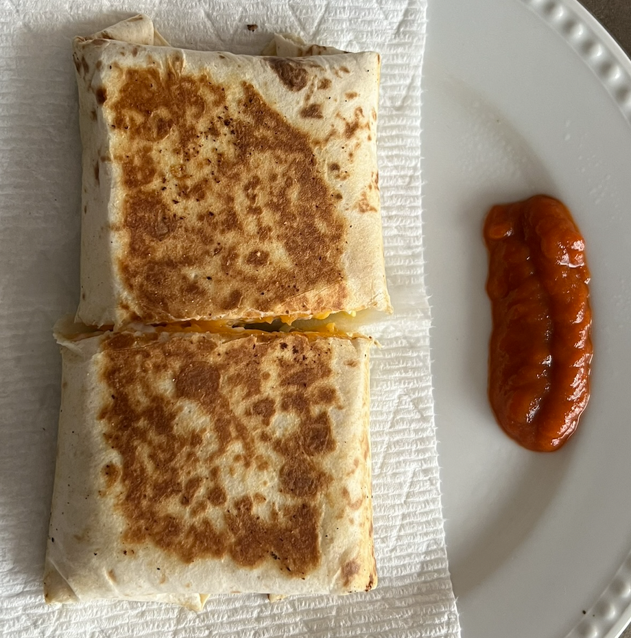

Cottage Cheese Burrito

Description:
A cottage cheese burrito is a surprisingly tasty dish made with uncommon ingredients. Don't let the name fool you -
it's nothing like a common burrito.
It also packs a surprising amount of protein and is easy to make.
Ingredients:
- Burrito-sized tortilla (corn or flour)
- 2 oz sharp cheddar cheese
- 60g 2% cottage cheese
- 2 eggs
- Garlic powder
- Chipotle seasoning
- Salt
- Olive/canola/vegetable oil
- Sriracha sauce
Directions:
- Crack open and beat the two eggs.
- Drizzle some olive oil on a pan and set it to low heat so the eggs do not sizzle when poured in.
- While the eggs are cooking, lay out the tortilla on the plate and spread the cheese out on it in a rectangular,
finished burrito shape shape.
- Microwave the open tortilla with the cheese on it for 30s. This makes the tortilla soft enough for folding and
melts the cheese.
- Sprinkle garlic powder, salt and chipotle seasoning on the egg, to taste.
- Fold a third of the omelette from both sides towards the middle so it has a rectangular shape and will fit over
the cheese on the tortilla.
- Flip the omelette to get the other side nice and cooked.
- Once cooked, trim the ends of the omelette so it is rectangular and place it on the cheese on the tortilla.
- Eat the trimmed ends or place it over the rectangular omelette piece - whatever you prefer.
- Do not turn off the heat yet, leave the pan on.
- Drain the cottage cheese liquid and lay the curds out on top of the egg. Be careful so the curds do not spill
out of the rectangular form.
- Fold the tortilla into a burrito shape. This video shows
you how to properly fold a burrito.
- Toast the burrito on either side with the heat turned up some more. The high heat ensures that the burrito gets
cooked quickly, and won't tear.
- Once done toasting, place it on a paper towel and cut it in half.
- Highly recommend dipping it in sriracha sauce while eating it.
- Bon Appetit!